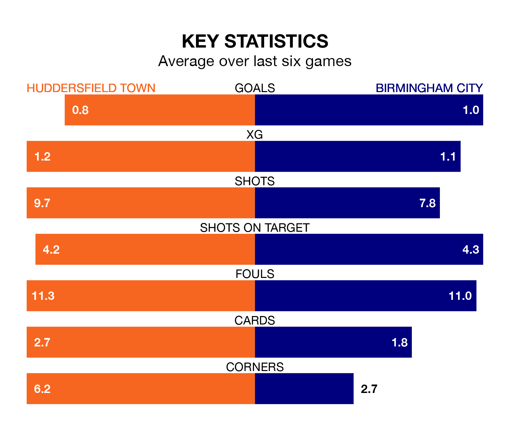

Saturday's match at the John Smith's Stadium sees two relegation candidates play each other, as 23rd-ranked Huddersfield Town host 22nd-placed Birmingham City.
Huddersfield have picked up 44 points from their first 44 EFL Championship games, with nine wins and 17 draws.
That is two points less than the Blues have collected, having won 12 and drawn 10.
In the last 10 years, Huddersfield and Birmingham have played each other on 17 occasions. They won five each, and they drew seven times.
On average, the Terriers scored 1.3 goals and the Blues 1.1 in those matches.
Their last meeting was on October 3, when Birmingham won 4-1 at home.
Huddersfield are in disappointing form in EFL Championship, with one win and two draws from their last six games.
With two wins and a draw over that period, Birmingham's form is slightly better – they have taken seven points from 18, compared to Town's five.
With 47 goals in 44 games so far this season, the Terriers are scoring at below the league average rate with 1.1 goals per game. And they are conceding more than average, letting in 74 goals at a rate of 1.7 per game.
City are also below average scorers, with 1.1 goals per game, compared to a league average of 1.3. They have conceded 1.5 goals per game.
Huddersfield's last match was on April 20, a 4-0 loss against Swansea City.
Birmingham drew 0-0 with Rotherham United last time out, also on April 20.
Updated: 07:59 (UTC), 26/04/24